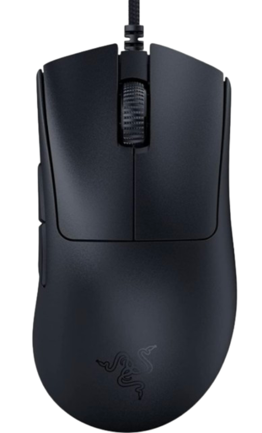
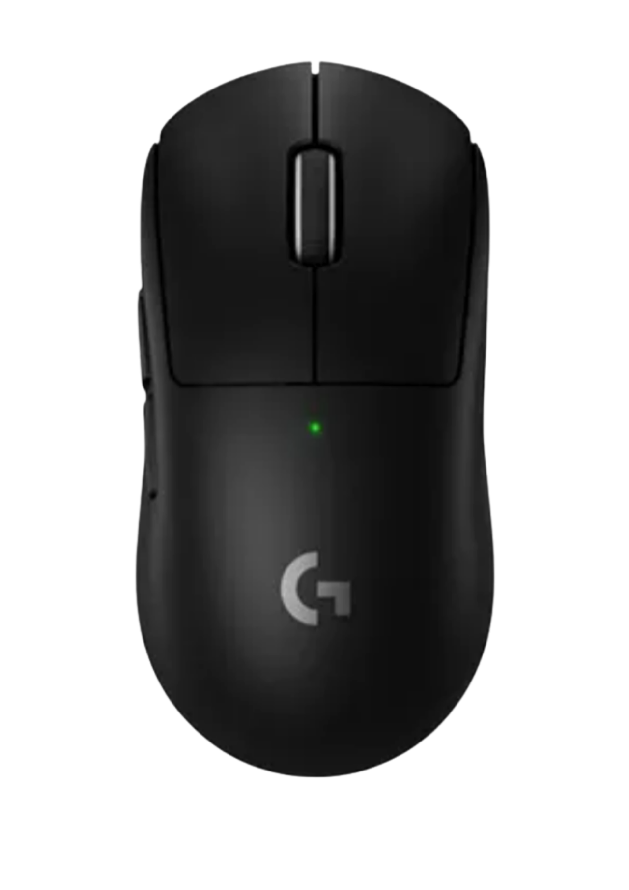
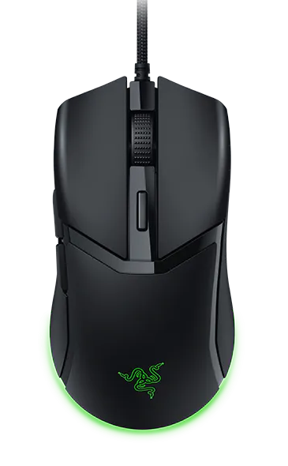

Built for fast aim, clean tracking, and quick reactions.
For games like Valorant, Roblox Rivals, Team Fortress 2, and Fortnite, the best FPS mice are the ones that feel fast, precise, and stable in your hand. This page gathers the best-fitting picks and keeps the focus on what matters most: control and comfort.

Fast sensor response
Good FPS mice should feel immediately responsive and keep your aim consistent when the action gets intense.
Grip-friendly shape
Whether you use a palm, claw, or fingertip grip, the right mouse shape will reduce strain and improve control.
Best FPS mice right now
Picks focused on low latency, precise tracking, and comfort for competitive play.
Razer DeathAdder V3
Best for: fast FPS aim, butterfly and drag clicking.
Why it works: 59g weight, 750+ IPS tracking, and 8000Hz polling for near-zero latency.
Open page →

Logitech Superlight Pro X
Best for: low-friction aim and long competitive sessions.
Why it works: lightweight feel with consistent tracking and simple day-to-day handling.
Open page →

Razer Cobra
Best for: value-focused FPS play with a dependable feel.
Why it works: consistent tracking and a straightforward setup that supports stable aim practice.
Open page →
Which FPS mouse fits your setup?
Use this quick breakdown to decide whether you want a budget option, a balanced everyday pick, or a premium feel.
Budget pick
Razer DeathAdder V3 gives you a strong mix of speed, comfort, and value for everyday FPS sessions.
Best if you want one reliable mouse without spending too much.
Balanced pick
A comfortable shape, fast response, and a simple sensor profile make this a good option for both casual and serious matches.
Best if you want something easy to trust in every round.
Premium feel
If you want a more refined feel, look for lighter builds and smoother clicks, especially if you play long sessions.
Best if you care more about polish and comfort over time.
What to look for in an FPS mouse
Sensor quality
High tracking accuracy and stable sensor performance help you stay consistent from the first shot to the final round.
Low latency feel
Fast click response and a clean sensor feel make a real difference in tight FPS situations.
Comfort over time
A mouse that fits your grip and feels comfortable during long sessions will support better performance in the long run.
Simple comparisons
Once you know the playstyle, it becomes much easier to compare sensor, weight, and grip fit without getting lost in specs.